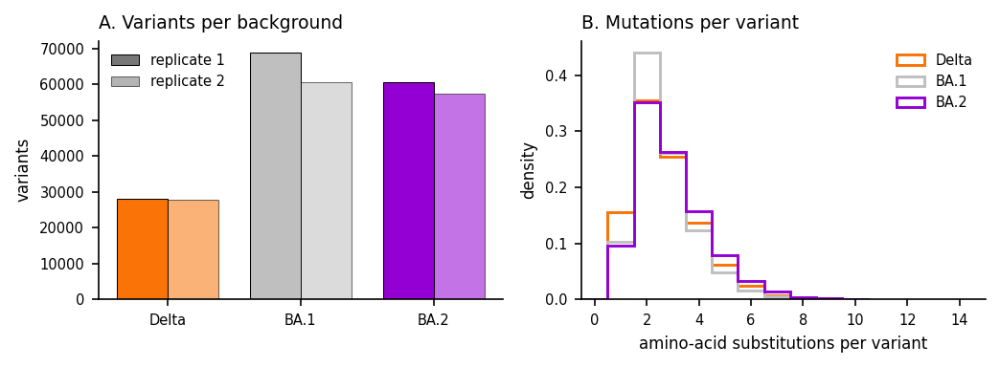
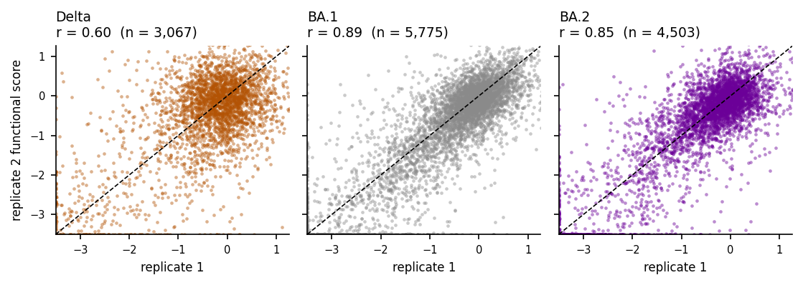
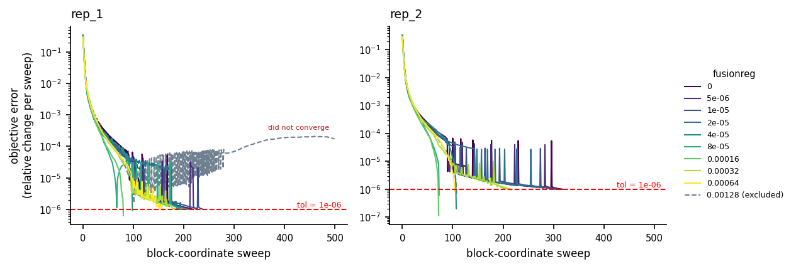
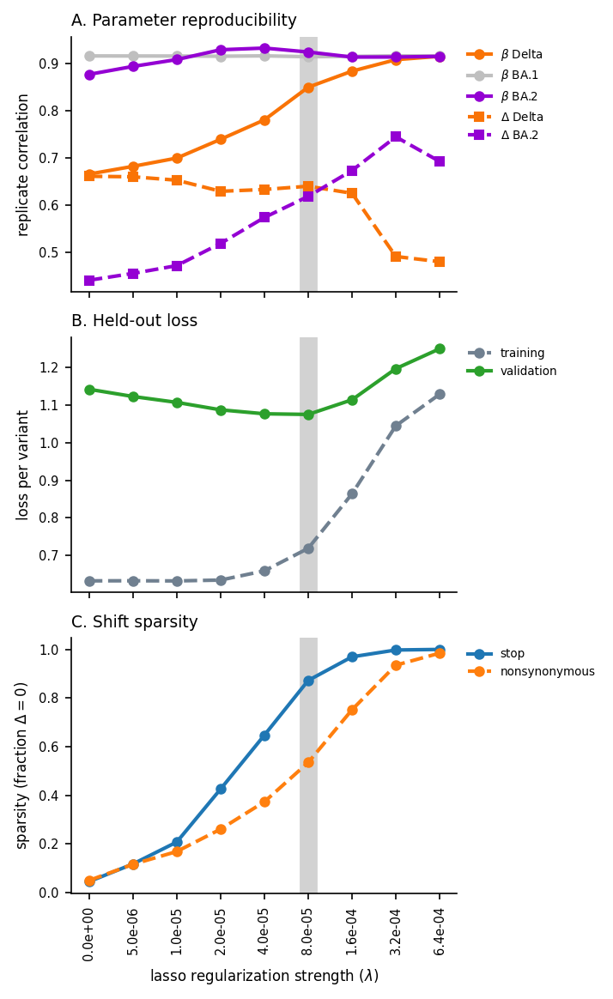
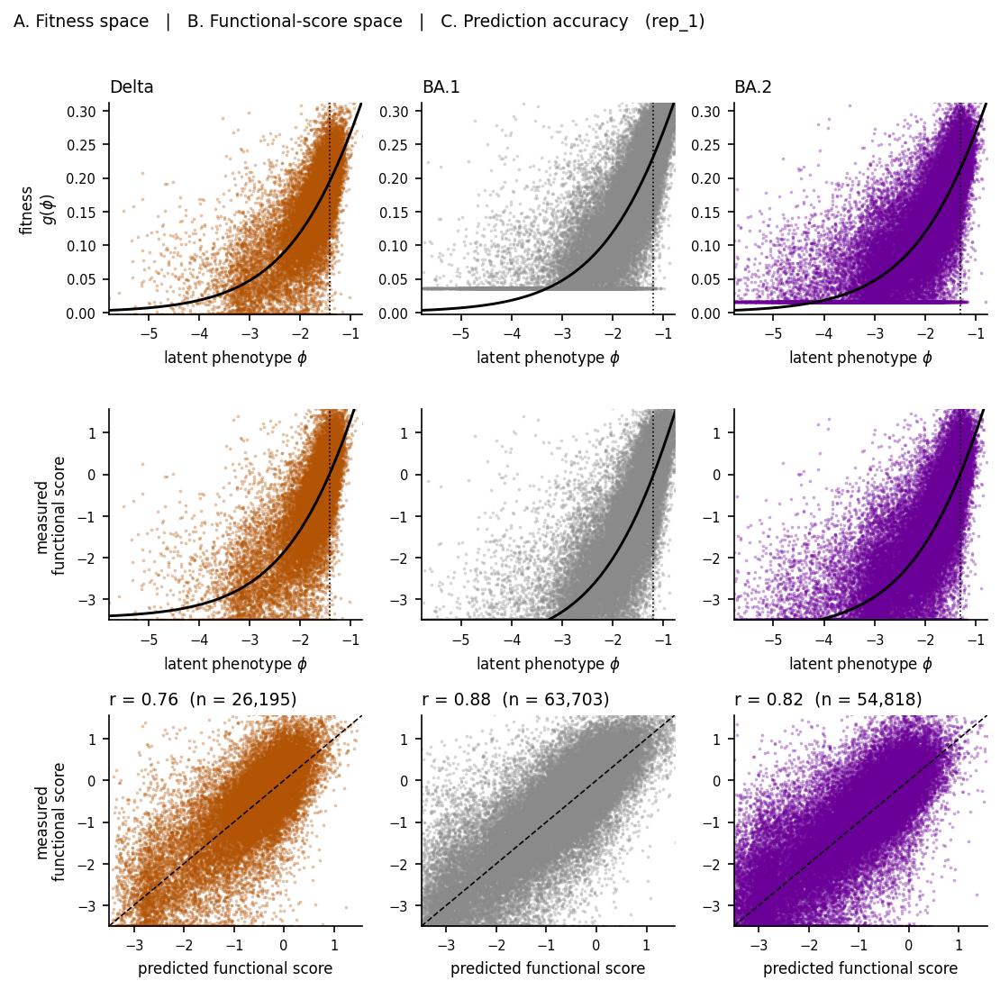
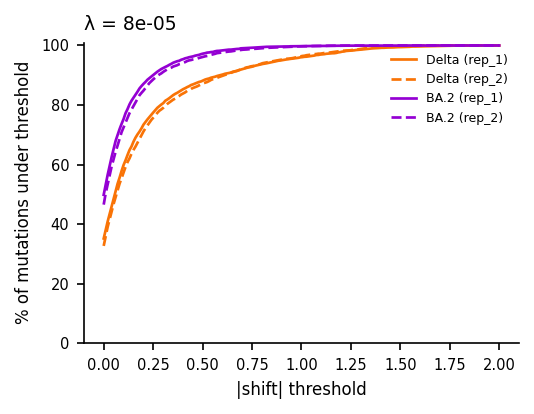
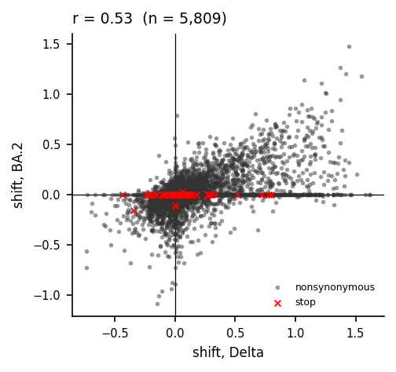
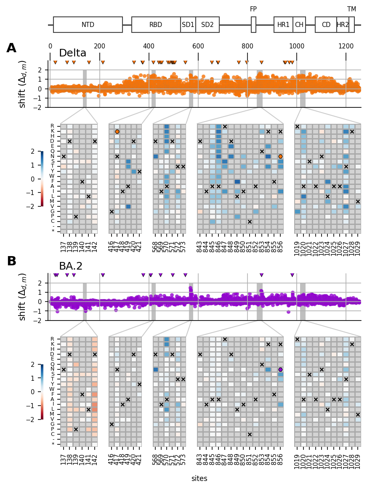
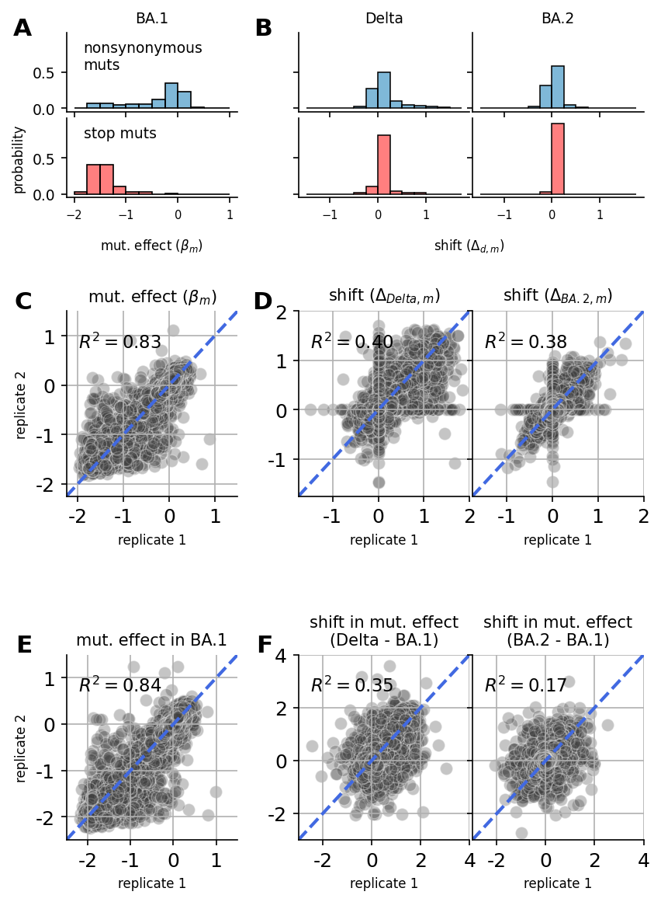

Manuscript Figures¶
Renders the spike manuscript figure surface from the CSVs exported by evaluate and cross_validation.
This notebook reads CSVs only. It must never load fit_collection.pkl (1.76 GB) — everything it needs was exported by evaluate for exactly that reason.
Figures produced
Fig |
File |
|---|---|
S6 |
|
S7 |
|
S9 |
|
S11 |
|
S12 |
|
S16 |
|
S17 |
|
4 |
|
5 |
|
[1]:
import warnings
warnings.filterwarnings("ignore")
import os
import sys
sys.path.insert(0, "notebooks")
import matplotlib.pyplot as plt
import matplotlib.colors as mcolors
import matplotlib.lines as mlines
import matplotlib.patches as patches
import numpy as np
import pandas as pd
import seaborn as sns
from scipy.stats import pearsonr
# Figure 4 reproduces the legacy notebook's zoom-effect connectors, which are
# built from these axes_grid1 / transform primitives.
from matplotlib.transforms import Bbox, TransformedBbox
from mpl_toolkits.axes_grid1.inset_locator import (
BboxConnector,
BboxConnectorPatch,
BboxPatch,
)
from _common import load_config
from _downstream import (
assert_wt_agreement,
fetch_validation_data,
lasso_slice,
savefig,
set_plot_style,
)
[2]:
config_path = "config/config.yaml"
downstream_config_path = "config/config_downstream.yaml"
output_dir = None
[3]:
# Parameters
config_path = "config/config.yaml"
downstream_config_path = "config/config_downstream.yaml"
output_dir = "results-prod-294-naive-baseline-arm"
[4]:
config = load_config(config_path, downstream_config_path)
spike = config["spike"]
lasso_choice = spike["lasso_choice"]
condition_titles = spike["condition_titles"]
condition_colors = spike["condition_colors"]
domain_dict = spike["domain_dict"]
fig_cfg = spike["figures"]
FORMATS = tuple(fig_cfg["formats"])
DPI = fig_cfg["dpi"]
EXCLUDED_FUSIONREG = fig_cfg["excluded_fusionreg"]
heatmap_cfg = fig_cfg["heatmap"]
validation_cfg = fig_cfg["validation"]
if output_dir is None:
output_dir = spike.get("output_dir", "results")
FIGURES_DIR = os.path.join(output_dir, "figures")
set_plot_style()
# Conditions in manuscript order. Omicron_BA1 is the reference condition, so
# it has no shift column -- shift figures use the other two.
REFERENCE = "Omicron_BA1"
CONDITIONS = ["Delta", "Omicron_BA1", "Omicron_BA2"]
SHIFT_CONDITIONS = [c for c in CONDITIONS if c != REFERENCE]
print(f"lasso_choice = {lasso_choice:g}")
print(f"figures -> {FIGURES_DIR}")
print(f"excluded fusionreg rungs: {EXCLUDED_FUSIONREG or 'none'}")
lasso_choice = 8e-05
figures -> results-prod-294-naive-baseline-arm/figures
excluded fusionreg rungs: [0.00128]
[5]:
def read(name):
"""Read an exported CSV from the pipeline results directory."""
return pd.read_csv(os.path.join(output_dir, name))
func_score_df = read("training_functional_scores.csv").fillna(
{"aa_substitutions": ""}
)
mutations_df = read("mutations_df.csv")
collection_muts = read("collection_muts.csv")
fit_sparsity = read("fit_sparsity.csv")
replicate_corr = read("library_replicate_correlation.csv")
convergence_trajectory = read("convergence_trajectory.csv")
fit_convergence = read("fit_convergence.csv")
ge_variants = read("ge_landscape_variants.csv")
ge_curve = read("ge_landscape_curve.csv")
ge_params = read("ge_params.csv")
cv_loss = read("cross_validation_loss.csv")
print(f"func_score_df {func_score_df.shape}")
print(f"mutations_df {mutations_df.shape}")
print(f"collection_muts {collection_muts.shape}")
print(f"convergence_trajectory {convergence_trajectory.shape}")
func_score_df (303007, 7)
mutations_df (5809, 20)
collection_muts (125150, 15)
convergence_trajectory (4028, 31)
[6]:
def drop_excluded(df, column="fusionreg"):
"""Remove regularization rungs excluded from analysis.
The top rung of the prod ladder is retained in the fit (removing it would
force a full refit) but is unstable -- one replicate hits the sweep cap
with drift_frac 0.10. Figures that sweep the ladder must not present it as
a normal point. See ``spike.figures.excluded_fusionreg``.
Two different treatments are correct for the two figures that sweep the
ladder, and the config comment's "(S9, S16)" wording elides this:
- **S9 (shrinkage) drops it, via this function.** Its three panels are the
lambda-selection criteria, which are only meaningful for fits that
converged, and its x-axis is categorical over the analysed ladder.
- **S16 (convergence) plots it and MARKS it**, bypassing this function and
iterating ``FULL_LADDER`` instead. Convergence is S16's subject; hiding
the one fit that did not converge would assert the opposite of the truth.
Marking S9's omitted rung on its categorical axis is a separate change
(``rung_x`` would need a tenth slot) and is not attempted here.
"""
if not EXCLUDED_FUSIONREG:
return df
return df[~df[column].isin(EXCLUDED_FUSIONREG)]
LADDER = sorted(drop_excluded(collection_muts)["fusionreg"].unique())
# The FULL ladder, excluded rungs included. Figures that claim to show "all
# rungs" iterate this and mark the excluded ones, rather than iterating LADDER
# and silently omitting them -- see spike.figures.excluded_fusionreg, which
# says such figures "mark it rather than silently showing it as a normal
# point".
FULL_LADDER = sorted(collection_muts["fusionreg"].unique())
# Ground truth for which fits actually failed, keyed by (dataset, rung). The
# instability is per-CELL, not per-rung: at 1.28e-3 rep_1 hits the sweep cap
# with drift_frac 0.10 while rep_2 converges cleanly in 109 sweeps. Greying
# rep_2's trace would substitute one dishonesty for another, so the mark is
# driven by this set rather than by fusionreg alone.
NONCONVERGED = {
(r.dataset_name, r.fusionreg)
for r in fit_convergence.itertuples()
if not r.converged
}
print(f"full ladder ({len(FULL_LADDER)} rungs); "
f"non-converged fits: {sorted(NONCONVERGED)}")
print(f"analysed ladder ({len(LADDER)} rungs): {[f'{x:g}' for x in LADDER]}")
full ladder (10 rungs); non-converged fits: [('rep_1', 0.00128)]
analysed ladder (9 rungs): ['0', '5e-06', '1e-05', '2e-05', '4e-05', '8e-05', '0.00016', '0.00032', '0.00064']
Figure S6 — variant counts per background¶
Barcode (variant) count distributions per background and replicate. Reads the post-filter training set, so counts reflect what the model actually saw.
[7]:
fig, axes = plt.subplots(1, 2, figsize=(7.0, 2.6))
# Panel A: variants per condition/replicate.
counts = (
func_score_df.groupby(["condition", "replicate"]).size().reset_index(name="n")
)
width = 0.38
x = np.arange(len(CONDITIONS))
replicates = sorted(counts["replicate"].unique())
for i, rep in enumerate(replicates):
sub = counts[counts["replicate"] == rep].set_index("condition")
heights = [sub.loc[c, "n"] for c in CONDITIONS]
axes[0].bar(
x + (i - 0.5) * width,
heights,
width,
color=[condition_colors[c] for c in CONDITIONS],
edgecolor="black",
linewidth=0.5,
alpha=1.0 if i == 0 else 0.55,
)
axes[0].set_xticks(x)
axes[0].set_xticklabels([condition_titles[c] for c in CONDITIONS])
axes[0].set_ylabel("variants")
axes[0].set_title("A. Variants per background", loc="left")
# Bars are colored by CONDITION, so a colored legend swatch would imply the
# color encodes replicate. Use neutral grey patches keyed to the alpha
# difference, which is what actually distinguishes the pairs.
axes[0].legend(
handles=[
patches.Patch(
facecolor="#777777",
alpha=1.0 if i == 0 else 0.55,
edgecolor="black",
linewidth=0.5,
label=f"replicate {rep}",
)
for i, rep in enumerate(replicates)
],
frameon=False,
)
# Panel B: distribution of mutations per variant.
for c in CONDITIONS:
sub = func_score_df[func_score_df["condition"] == c]
axes[1].hist(
sub["n_subs"],
bins=np.arange(0, sub["n_subs"].max() + 2) - 0.5,
histtype="step",
linewidth=1.4,
color=condition_colors[c],
label=condition_titles[c],
density=True,
)
axes[1].set_xlabel("amino-acid substitutions per variant")
axes[1].set_ylabel("density")
axes[1].set_title("B. Mutations per variant", loc="left")
axes[1].legend(frameon=False)
axes[1].set_xlim(-0.5, 15)
fig.tight_layout()
savefig(fig, "raw_data_summary_barcodes_backgrounds_hist", FIGURES_DIR, FORMATS, DPI)
plt.show()
wrote results-prod-294-naive-baseline-arm/figures/raw_data_summary_barcodes_backgrounds_hist.pdf
wrote results-prod-294-naive-baseline-arm/figures/raw_data_summary_barcodes_backgrounds_hist.png

Figure S7 — replicate functional-score correlation¶
Per-background scatter of functional scores for variants observed in both replicate libraries, with Pearson r.
[8]:
# BA.1's configured colour is #BFBFBF, a light grey that all but disappears on
# white at low alpha. Every condition colour is pulled toward black by the same
# factor so the three panels stay visually comparable.
def darken(hex_color, factor=0.72):
"""Blend a hex colour toward black; factor 1.0 leaves it unchanged."""
rgb = mcolors.to_rgb(hex_color)
return tuple(channel * factor for channel in rgb)
fig, axes = plt.subplots(1, 3, figsize=(7.5, 2.7), sharex=True, sharey=True)
for ax, cond in zip(axes, CONDITIONS):
sub = func_score_df[func_score_df["condition"] == cond]
wide = sub.pivot_table(
index="aa_substitutions", columns="replicate", values="func_score"
).dropna()
reps = sorted(wide.columns)
xv, yv = wide[reps[0]].to_numpy(), wide[reps[1]].to_numpy()
ax.scatter(
xv,
yv,
s=5,
alpha=0.45,
color=darken(condition_colors[cond]),
linewidths=0,
rasterized=True,
)
r = pearsonr(xv, yv)[0]
ax.set_title(f"{condition_titles[cond]}\nr = {r:.2f} (n = {len(wide):,})", loc="left")
ax.set_xlabel(f"replicate {reps[0]}")
lo = float(np.nanpercentile(np.concatenate([xv, yv]), 0.5))
hi = float(np.nanpercentile(np.concatenate([xv, yv]), 99.5))
ax.plot([lo, hi], [lo, hi], ls="--", lw=0.8, color="black", zorder=3)
ax.set_xlim(lo, hi)
ax.set_ylim(lo, hi)
axes[0].set_ylabel("replicate 2 functional score")
fig.tight_layout()
savefig(
fig,
"replicate_functional_score_correlation_scatter",
FIGURES_DIR,
FORMATS,
DPI,
)
plt.show()
wrote results-prod-294-naive-baseline-arm/figures/replicate_functional_score_correlation_scatter.pdf
wrote results-prod-294-naive-baseline-arm/figures/replicate_functional_score_correlation_scatter.png

Figure S16 — convergence across the lasso ladder¶
The outer convergence criterion is a between-sweep relative change in the objective, not a gradient norm:
compared against tol. One line per (replicate, lasso weight).
This panel plots the full ladder, including the 1.28e-3 rung that is excluded from analysis elsewhere. A convergence figure that dropped the only non-converged fit would assert the opposite of the truth. Marked traces (grey, dashed) are rungs excluded from analysis or fits that never crossed tol; the single non-converged fit — rep_1 at 1.28e-3, which hit the 500-sweep cap with drift_frac 0.10 — is annotated directly. Note that rep_2 at the same rung converged normally in 109
sweeps, so the instability is per-fit, not a property of the rung.
[9]:
# S16 plots the FULL ladder, including rungs excluded from analysis, because
# its subject IS convergence: hiding the one fit that did not converge is the
# single most misleading thing this figure could do. Excluded/non-converged
# traces are drawn in grey and dashed and called out in the legend, per
# spike.figures.excluded_fusionreg ("mark it rather than silently showing it
# as a normal point").
traj = convergence_trajectory
tol = spike["fitting"]["tol"]
fig, axes = plt.subplots(1, 2, figsize=(7.2, 2.9), sharex=True)
datasets = sorted(traj["dataset_name"].unique())
cmap = plt.get_cmap("viridis")
# Colour by position in the ANALYSED ladder so the palette is unchanged from
# the version of this figure that omitted the excluded rung; marked traces are
# drawn in grey and take no colour slot.
norm = plt.Normalize(0, max(len(LADDER) - 1, 1))
marked_any = False
for ax, ds in zip(axes, datasets):
sub = traj[traj["dataset_name"] == ds]
for fr in FULL_LADDER:
s = sub[sub["fusionreg"] == fr].sort_values("iteration")
if s.empty:
continue
excluded = fr in EXCLUDED_FUSIONREG
failed = (ds, fr) in NONCONVERGED
if excluded or failed:
style = dict(lw=1.0, color="slategrey", ls="--", zorder=1)
marked_any = True
else:
style = dict(lw=1.0, color=cmap(norm(LADDER.index(fr))), zorder=2)
ax.semilogy(
s["iteration"],
s["objective_error_trajectory"].clip(lower=1e-12),
label=f"{fr:g}",
**style,
)
# Annotate the fits that never crossed tol, at the end of their trace.
if failed:
ax.annotate(
"did not converge",
xy=(s["iteration"].iloc[-1], s["objective_error_trajectory"].iloc[-1]),
xytext=(-4, 6),
textcoords="offset points",
ha="right",
va="bottom",
fontsize=5.5,
color="firebrick",
)
ax.axhline(tol, ls="--", lw=1.0, color="red")
ax.text(
0.98,
tol,
f" tol = {tol:g}",
transform=ax.get_yaxis_transform(),
ha="right",
va="bottom",
fontsize=6,
color="red",
)
ax.set_title(ds, loc="left")
ax.set_xlabel("block-coordinate sweep")
axes[0].set_ylabel("objective error\n(relative change per sweep)")
# The legend is harvested from axes[0] only, so a rung marked in one panel but
# not the other would otherwise be mislabelled. Build the fusionreg entries
# from the analysed ladder and append ONE explicit proxy for the marked
# traces, so the legend describes both panels correctly.
handles, labels = axes[0].get_legend_handles_labels()
keep = [(h, lb) for h, lb in zip(handles, labels) if float(lb) in LADDER]
handles = [h for h, _ in keep]
labels = [lb for _, lb in keep]
if marked_any:
handles.append(mlines.Line2D([], [], color="slategrey", ls="--", lw=1.0))
labels.append(f"{EXCLUDED_FUSIONREG[0]:g} (excluded)")
fig.legend(
handles,
labels,
title="fusionreg",
frameon=False,
loc="center left",
bbox_to_anchor=(1.0, 0.5),
fontsize=6,
title_fontsize=7,
)
fig.tight_layout()
savefig(fig, "convergence_all_lasso_lines", FIGURES_DIR, FORMATS, DPI)
plt.show()
wrote results-prod-294-naive-baseline-arm/figures/convergence_all_lasso_lines.pdf
wrote results-prod-294-naive-baseline-arm/figures/convergence_all_lasso_lines.png

Figure S9 — shrinkage analysis¶
Three panels sweeping the lasso ladder: replicate correlation of parameters, held-out loss, and shift sparsity by mutation class. Together these are the three criteria used to choose λ.
cross_validation_loss values are already per-variant averages (the loss uses .mean()); do not divide by variant count again.
[10]:
# The lasso ladder is plotted on a CATEGORICAL x-axis, matching the legacy
# figure (which formatted each rung as f"{lambda:.1e}" and let seaborn place
# them evenly). This is the right choice here for two reasons: the ladder
# includes lambda = 0, which no log axis can show, and the rungs are a
# hand-chosen sweep rather than samples of a continuum -- even spacing makes
# the shape of each curve legible instead of crushing eight rungs into the
# right-hand third of the panel.
LADDER_SORTED = sorted(LADDER)
RUNG_LABELS = [f"{x:.1e}" for x in LADDER_SORTED]
RUNG_POS = {x: i for i, x in enumerate(LADDER_SORTED)}
def rung_x(values):
"""Map fusionreg values onto their categorical positions."""
return [RUNG_POS[v] for v in values]
fig, axes = plt.subplots(3, figsize=(4.8, 7.8), sharex=True)
# Panel A: replicate correlation of beta and shift parameters.
corr = drop_excluded(replicate_corr)
for param in ["beta_Delta", "beta_Omicron_BA1", "beta_Omicron_BA2"]:
s = corr[corr["mut_param"] == param].sort_values("fusionreg")
cond = param.replace("beta_", "")
axes[0].plot(
rung_x(s["fusionreg"]),
s["correlation"],
marker="o",
ms=5,
lw=2.0,
color=condition_colors[cond],
label=rf"$\beta$ {condition_titles[cond]}",
)
for param in ["shift_Delta", "shift_Omicron_BA2"]:
s = corr[corr["mut_param"] == param].sort_values("fusionreg")
cond = param.replace("shift_", "")
axes[0].plot(
rung_x(s["fusionreg"]),
s["correlation"],
marker="s",
ms=5,
lw=2.0,
ls="--",
color=condition_colors[cond],
label=rf"$\Delta$ {condition_titles[cond]}",
)
axes[0].set_ylabel("replicate correlation")
axes[0].set_title("A. Parameter reproducibility", loc="left")
axes[0].legend(bbox_to_anchor=(1.0, 1.0), loc="upper left", frameon=False, fontsize=6.5)
# Panel B: cross-validation loss.
cvl = drop_excluded(cv_loss)
for split, ls, color in [
("training", "--", "slategrey"),
("validation", "-", "#2CA02C"),
]:
s = (
cvl[cvl["dataset"] == split]
.groupby("fusionreg", as_index=False)["mean_loss"]
.mean()
.sort_values("fusionreg")
)
axes[1].plot(
rung_x(s["fusionreg"]),
s["mean_loss"],
marker="o",
ms=5,
lw=2.0,
ls=ls,
color=color,
label=split,
)
axes[1].set_ylabel("loss per variant")
axes[1].set_title("B. Held-out loss", loc="left")
axes[1].legend(bbox_to_anchor=(1.0, 1.0), loc="upper left", frameon=False, fontsize=6.5)
# Panel C: shift sparsity, stop vs nonsynonymous.
sp = drop_excluded(fit_sparsity)
for mut_type, ls in [("stop", "-"), ("nonsynonymous", "--")]:
s = (
sp[sp["mut_type"] == mut_type]
.groupby("fusionreg", as_index=False)["sparsity"]
.mean()
.sort_values("fusionreg")
)
axes[2].plot(
rung_x(s["fusionreg"]),
s["sparsity"],
marker="o",
ms=5,
lw=2.0,
ls=ls,
label=mut_type,
)
axes[2].set_ylabel(r"sparsity (fraction $\Delta = 0$)")
axes[2].set_title("C. Shift sparsity", loc="left")
axes[2].legend(bbox_to_anchor=(1.0, 1.0), loc="upper left", frameon=False, fontsize=6.5)
# The chosen lambda is marked as a wide translucent band, as in the legacy
# figure -- on a categorical axis it lands on a rung rather than between them.
for ax in axes:
ax.axvline(RUNG_POS[lasso_choice], color="grey", linewidth=10, alpha=0.35, zorder=0)
axes[2].set_xticks(range(len(LADDER_SORTED)))
axes[2].set_xticklabels(RUNG_LABELS, rotation=90, ha="center")
axes[2].set_xlabel(r"lasso regularization strength ($\lambda$)")
sns.despine(fig)
fig.tight_layout()
savefig(fig, "shrinkage_analysis_trace_plots_beta", FIGURES_DIR, FORMATS, DPI)
plt.show()
wrote results-prod-294-naive-baseline-arm/figures/shrinkage_analysis_trace_plots_beta.pdf
wrote results-prod-294-naive-baseline-arm/figures/shrinkage_analysis_trace_plots_beta.png

Figure S17 — global epistasis in three spaces¶
Three rows, one column per condition (Delta, BA.1, BA.2). Each row shows the same fitted model in a different space, so the reader can see how the shared sigmoid becomes a per-condition prediction and how well that prediction holds.
Row A — fitness space. The global-epistasis function g(φ) itself, a sigmoid mapping the latent phenotype φ onto a bounded fitness scale. This curve is shared by all three conditions — the same black line is drawn in every panel — because α and the sigmoid are global parameters. The points are each variant’s measured functional score mapped onto the same scale (func_score / α + g(φ_wt)), so the vertical gap between a point and the curve is that variant’s residual.
Row B — functional-score space. The measured functional scores against the per-condition curve α · (g(φ) − g(φ_wt)). This is the same sigmoid, scaled by α and shifted vertically so each condition’s own wildtype sits at zero — which is exactly the convention functional scores are reported in. Because each condition has a different wildtype latent φ_wt, this curve differs between columns even though the underlying g does not.
Row C — prediction accuracy. Predicted against measured functional score, with the identity line and the per-condition Pearson r. Row B’s curve evaluated at each variant’s own φ is precisely the prediction plotted here, so row C is row B collapsed onto the model’s own axis.
The dotted vertical line in rows A and B marks the condition’s wildtype latent phenotype φ_wt.
[11]:
# The per-condition functional-score curve is exported alongside the shared
# fitness curve. It is read here rather than in the setup cell because this is
# the only figure that consumes it.
ge_curve_func_score = read("ge_landscape_curve_func_score.csv")
# Three spaces, one column per condition. Overlaying all three conditions on
# shared axes is what the legacy figure did, but with ~200k variants the
# last-drawn condition hides the other two completely -- the per-condition r
# values then describe points the reader cannot see. Faceting keeps every
# condition visible.
#
# Only the FIRST replicate is shown (rep_1). The exported frames carry both
# library replicates; they are independent fits of the same three conditions,
# so plotting both would double every panel without adding information. The
# replicate agreement itself is the subject of Figure S7.
first_ds = sorted(ge_variants["dataset_name"].unique())[0]
gv = ge_variants[ge_variants["dataset_name"] == first_ds]
gc = ge_curve[ge_curve["dataset_name"] == first_ds].sort_values("predicted_latent")
gcf = ge_curve_func_score[ge_curve_func_score["dataset_name"] == first_ds].sort_values(
"predicted_latent"
)
# Denser, darker points than a bare scatter default: at ~200k variants a
# single-pixel marker at alpha 0.1 renders as haze. s=3 at alpha 0.35 keeps the
# dense core solid while sparse tails stay visible as individual points. BA.1's
# configured color is a light grey, so every scatter is drawn a shade darker
# than the condition color to stay legible on white. `rasterized=True` is
# essential: 200k vector points would make the PDF unopenable.
MARKER_SIZE = 3.0
MARKER_ALPHA = 0.35
SCATTER_KW = dict(s=MARKER_SIZE, alpha=MARKER_ALPHA, linewidths=0, rasterized=True)
def darken(hex_color, factor=0.72):
"""Scale an RGB hex color toward black for on-white legibility."""
return tuple(c * factor for c in plt.matplotlib.colors.to_rgb(hex_color))
fig, axes = plt.subplots(3, len(CONDITIONS), figsize=(7.4, 7.4))
# Row 3 is a predicted-vs-measured identity plot, so both axes need one shared
# scale. Percentile clipping keeps a handful of extreme scores from
# compressing the bulk of the cloud. Row 2 shares the same y limits so the two
# functional-score rows can be read against each other.
lims = [
float(np.nanpercentile(gv["func_score"], 0.5)),
float(np.nanpercentile(gv["func_score"], 99.5)),
]
# Row 1 lives on the fitness scale, which is bounded by (0, 1) but occupies
# only its lower part here. Clip to the observed spread so the sigmoid's
# useful range fills the panel instead of a flat line hugging zero.
fit_lims = [
float(np.nanpercentile(gv["measured_fitness"], 0.5)),
float(np.nanpercentile(gv["measured_fitness"], 99.5)),
]
# The latent axis is likewise dominated by a thin tail of dead variants
# reaching phi ~ -10 while the bulk sits near -2. Clipping the tails keeps the
# informative part of the sigmoid on screen in rows 1-2.
lat_lims = [
float(np.nanpercentile(gv["predicted_latent"], 0.25)),
float(np.nanpercentile(gv["predicted_latent"], 99.9)),
]
for j, cond in enumerate(CONDITIONS):
s = gv[gv["condition"] == cond]
color = darken(condition_colors[cond])
wt_latent = float(s["wildtype_latent"].iloc[0])
# --- Row 1: fitness space. The sigmoid g(phi) is shared by every
# condition, so the same black curve is drawn in all three panels; only
# the point cloud and the wildtype marker differ between columns.
#
# The scatter is `measured_fitness` -- the MEASURED functional score
# mapped onto the fitness scale, func_score / alpha + g(phi_wt) -- not
# `predicted_fitness`. `predicted_fitness` is g(phi) evaluated at each
# variant's own latent, so it lies exactly on the curve by construction
# and would render as a black line hiding its own points. Plotting the
# measurement instead makes the vertical gap to the curve the residual,
# which is what `plot.plot_ge_landscape` defaults to as well.
ax = axes[0, j]
ax.scatter(s["predicted_latent"], s["measured_fitness"], color=color, **SCATTER_KW)
ax.plot(gc["predicted_latent"], gc["ge_curve_value"], color="black", lw=1.4)
ax.axvline(wt_latent, color="black", ls=":", lw=0.8)
ax.set_title(condition_titles[cond], loc="left")
ax.set_xlabel(r"latent phenotype $\phi$")
ax.set_xlim(*lat_lims)
ax.set_ylim(*fit_lims)
if j == 0:
ax.set_ylabel("fitness\n$g(\\phi)$")
# --- Row 2: functional-score space. Measured functional scores against
# the per-condition curve alpha * (g(phi) - g(phi_wt)) -- the same sigmoid,
# scaled by alpha and shifted so each condition's own wildtype sits at
# zero. That shift is what makes this curve condition-specific.
ax = axes[1, j]
c = gcf[gcf["condition"] == cond]
ax.scatter(s["predicted_latent"], s["func_score"], color=color, **SCATTER_KW)
ax.plot(c["predicted_latent"], c["func_score_curve_value"], color="black", lw=1.4)
ax.axvline(wt_latent, color="black", ls=":", lw=0.8)
ax.set_xlabel(r"latent phenotype $\phi$")
ax.set_xlim(*lat_lims)
ax.set_ylim(*lims)
if j == 0:
ax.set_ylabel("measured\nfunctional score")
# --- Row 3: predicted vs measured functional score, with Pearson r.
ax = axes[2, j]
r = pearsonr(s["predicted_func_score"], s["func_score"])[0]
ax.scatter(s["predicted_func_score"], s["func_score"], color=color, **SCATTER_KW)
ax.plot(lims, lims, ls="--", lw=0.8, color="black")
ax.set_title(f"r = {r:.2f} (n = {len(s):,})", loc="left")
ax.set_xlabel("predicted functional score")
ax.set_xlim(*lims)
ax.set_ylim(*lims)
if j == 0:
ax.set_ylabel("measured\nfunctional score")
fig.suptitle(
"A. Fitness space | B. Functional-score space | "
f"C. Prediction accuracy ({first_ds})",
x=0.01,
ha="left",
fontsize=9,
)
fig.tight_layout(rect=[0, 0, 1, 0.965])
savefig(fig, "global_epistasis_and_prediction_correlations", FIGURES_DIR, FORMATS, DPI)
plt.show()
wrote results-prod-294-naive-baseline-arm/figures/global_epistasis_and_prediction_correlations.pdf
wrote results-prod-294-naive-baseline-arm/figures/global_epistasis_and_prediction_correlations.png

Figure S11 — cumulative distribution of shift magnitudes¶
Fraction of mutations whose absolute shift falls under a threshold, at the chosen λ. The steep rise near zero is the lasso doing its job.
[12]:
muts_at_lambda = lasso_slice(collection_muts, lasso_choice)
fig, ax = plt.subplots(figsize=(3.6, 2.8))
thresholds = np.linspace(0, 2.0, 200)
for cond in SHIFT_CONDITIONS:
col = f"shift_{cond}"
for ds, ls in zip(sorted(muts_at_lambda["dataset_name"].unique()), ["-", "--"]):
vals = muts_at_lambda.loc[
muts_at_lambda["dataset_name"] == ds, col
].abs().dropna()
frac = [(vals <= t).mean() * 100 for t in thresholds]
ax.plot(
thresholds,
frac,
lw=1.3,
ls=ls,
color=condition_colors[cond],
label=f"{condition_titles[cond]} ({ds})",
)
ax.set_xlabel("|shift| threshold")
ax.set_ylabel("% of mutations under threshold")
ax.set_title(f"λ = {lasso_choice:g}", loc="left")
ax.legend(frameon=False, fontsize=6)
ax.set_ylim(0, 101)
fig.tight_layout()
savefig(fig, "percent_shifts_under_x_lineplot", FIGURES_DIR, FORMATS, DPI)
plt.show()
wrote results-prod-294-naive-baseline-arm/figures/percent_shifts_under_x_lineplot.pdf
wrote results-prod-294-naive-baseline-arm/figures/percent_shifts_under_x_lineplot.png

Figure S12 — Delta vs BA.2 shift correlation¶
Are the condition-specific shifts shared between the two non-reference backgrounds, or background-specific? Uses replicate-averaged shifts.
[13]:
fig, ax = plt.subplots(figsize=(3.4, 3.2))
sub = mutations_df.dropna(subset=["avg_shift_Delta", "avg_shift_Omicron_BA2"])
nonsyn = sub[sub["sense"] == "nonsynonymous"]
stop = sub[sub["sense"] == "stop"]
ax.scatter(
nonsyn["avg_shift_Delta"],
nonsyn["avg_shift_Omicron_BA2"],
s=7,
alpha=0.5,
color="#333333",
linewidths=0,
rasterized=True,
label="nonsynonymous",
)
ax.scatter(
stop["avg_shift_Delta"],
stop["avg_shift_Omicron_BA2"],
s=14,
alpha=0.9,
color="red",
marker="x",
linewidths=1.0,
label="stop",
)
r = pearsonr(sub["avg_shift_Delta"], sub["avg_shift_Omicron_BA2"])[0]
ax.axhline(0, lw=0.6, color="black", zorder=0)
ax.axvline(0, lw=0.6, color="black", zorder=0)
ax.set_xlabel(f"shift, {condition_titles['Delta']}")
ax.set_ylabel(f"shift, {condition_titles['Omicron_BA2']}")
ax.set_title(f"r = {r:.2f} (n = {len(sub):,})", loc="left")
ax.legend(frameon=False, fontsize=6)
fig.tight_layout()
savefig(fig, "shift_corr_Delta_BA2", FIGURES_DIR, FORMATS, DPI)
plt.show()
wrote results-prod-294-naive-baseline-arm/figures/shift_corr_Delta_BA2.pdf
wrote results-prod-294-naive-baseline-arm/figures/shift_corr_Delta_BA2.png

Figure 4 — shift by site, with zoom panels¶
Reproduces the layout of the original spike-analysis figure (matsengrp/SARS-CoV-2_spike_multidms@6c98b7b, spike-analysis.ipynb).
Panel A (Delta) and panel B (BA.2) each pair a per-site shift scatter with five zoomed amino-acid heatmaps, joined by zoom-effect connectors. The domain-architecture ribbon at the top spans the primary sequence.
Marker vocabulary, from site_map.csv:
black
x— the residue is wildtype in the reference condition (BA.1)filled circle — the residue is wildtype in this homolog but not in BA.1
triangle above the scatter — a site where this homolog’s wildtype differs from BA.1’s
BA.1 is the reference condition, so only Delta and BA.2 have shifts.
[15]:
site_ranges = heatmap_cfg["site_ranges"]
AA_ORDER = heatmap_cfg["aa_order"]
# The zoom windows were chosen by eye from v0.4.0 shift values. lambda is
# unchanged at 8.0e-05, so they should still hold -- but verify rather than
# assume.
#
# Rank PER CONDITION, not on a pooled max. Delta's shifts are globally larger
# than BA.2's, so a pooled ranking buries any BA.2-specific window. zoom1 is
# exactly that case: site 142 carries D142L, one of the five experimentally
# validated mutations, with a BA.2 shift of -0.96 (rank ~6 within BA.2) but a
# Delta shift of only -0.11. A pooled metric ranks it ~131st and reads as
# "stale window" when the window is in fact validation-motivated.
#
# So: this is a report, not a gate. Windows are chosen for biological
# relevance -- shift rank is corroboration, not the selection criterion.
site_ranks = {}
for cond in SHIFT_CONDITIONS:
s = (
mutations_df.groupby("sites", as_index=False)[f"avg_shift_{cond}"]
.apply(lambda x: x.abs().max())
.rename(columns={f"avg_shift_{cond}": "abs_shift"})
.sort_values("abs_shift", ascending=False)
.reset_index(drop=True)
)
s["rank"] = s.index + 1
site_ranks[cond] = s.set_index("sites")
n_sites = len(site_ranks[SHIFT_CONDITIONS[0]])
print(f"Zoom-window check -- strongest site per window, ranked within each "
f"condition (of {n_sites} sites):")
for name, (lo, hi) in site_ranges.items():
parts = []
for cond in SHIFT_CONDITIONS:
s = site_ranks[cond]
win = s[(s.index >= lo) & (s.index <= hi)]
if win.empty:
parts.append(f"{condition_titles[cond]}: no data")
continue
best_site = win["abs_shift"].idxmax()
parts.append(
f"{condition_titles[cond]}: site {int(best_site)} "
f"|shift|={win.loc[best_site, 'abs_shift']:.2f} "
f"(rank {int(win.loc[best_site, 'rank'])})"
)
print(f" {name} [{lo}-{hi}] " + " | ".join(parts))
validated_sites = {
int("".join(ch for ch in m if ch.isdigit())): m
for m in VALIDATION_MUTATIONS
}
for name, (lo, hi) in site_ranges.items():
hits = [m for site, m in validated_sites.items() if lo <= site <= hi]
if hits:
print(f" {name} contains validated mutation(s): {', '.join(hits)}")
Zoom-window check -- strongest site per window, ranked within each condition (of 1221 sites):
zoom1 [137-142] Delta: site 137 |shift|=0.31 (rank 555) | BA.2: site 142 |shift|=0.96 (rank 8)
zoom2 [416-421] Delta: site 419 |shift|=1.47 (rank 6) | BA.2: site 417 |shift|=0.34 (rank 223)
zoom3 [568-573] Delta: site 568 |shift|=1.45 (rank 8) | BA.2: site 568 |shift|=1.48 (rank 1)
zoom4 [843-856] Delta: site 849 |shift|=1.62 (rank 1) | BA.2: site 854 |shift|=1.18 (rank 3)
zoom5 [1019-1029] Delta: site 1020 |shift|=1.41 (rank 14) | BA.2: site 1027 |shift|=0.78 (rank 19)
zoom1 contains validated mutation(s): D142L
zoom2 contains validated mutation(s): A419S
zoom3 contains validated mutation(s): A570D
zoom4 contains validated mutation(s): K854N
zoom5 contains validated mutation(s): T1027I
[16]:
# Legacy Figure 4, reproduced from the original spike-analysis notebook
# (matsengrp/SARS-CoV-2_spike_multidms@6c98b7b, cell 51). The structure --
# 8-row mosaic, zoom-effect connectors, marker vocabulary, panel letters --
# is the legacy code verbatim; only the data plumbing is adapted to this
# pipeline's CSV schema.
# The legacy code refers to conditions as "BA1"/"BA2"; our CSVs use
# "Omicron_BA1"/"Omicron_BA2". Rename a working copy so the legacy body reads
# exactly as it did originally.
_rename = {"Omicron_BA1": "BA1", "Omicron_BA2": "BA2"}
mut_df = mutations_df.rename(
columns={c: c.replace("Omicron_BA2", "BA2").replace("Omicron_BA1", "BA1")
for c in mutations_df.columns}
)
site_map = read("site_map.csv").rename(columns=_rename).set_index("sites")
saveas = "shift_by_site_heatmap_zoom"
# heatmap ax width ratios
width_ratios = [(end - start) for key, (start, end) in site_ranges.items()]
# make the first one a little bigger for the color bar
width_ratios[0] += width_ratios[0] * 0.5
sort_order = AA_ORDER
fig = plt.figure(figsize=[6.4, 9])
axs = fig.subplot_mosaic(
[
["Annotation"] * 5,
["Delta"] * 5,
[f"{k}_Delta" for k in list(site_ranges.keys())],
[f"{k}_Delta" for k in list(site_ranges.keys())],
["."] * 5,
["BA2"] * 5,
[f"{k}_BA2" for k in list(site_ranges.keys())],
[f"{k}_BA2" for k in list(site_ranges.keys())],
],
height_ratios=[1.5, 2, 2, 2, 0.3, 2, 2, 2],
empty_sentinel=".",
# set the width ratios between the columns
width_ratios=width_ratios,
gridspec_kw={"wspace": 0.20, "hspace": 0.4},
)
# derived from
# https://matplotlib.org/stable/gallery/subplots_axes_and_figures/axes_zoom_effect.html
def connect_bbox(bbox1, bbox2, loc1a, loc2a, loc1b, loc2b,
prop_lines, prop_patches=None):
if prop_patches is None:
prop_patches = {
**prop_lines,
"alpha": prop_lines.get("alpha", 1) * 0.2,
"clip_on": False,
}
c1 = BboxConnector(
bbox1, bbox2, loc1=loc1a, loc2=loc2a, clip_on=False, **prop_lines)
c2 = BboxConnector(
bbox1, bbox2, loc1=loc1b, loc2=loc2b, clip_on=False, **prop_lines)
bbox_patch1 = BboxPatch(bbox1, **prop_patches)
bbox_patch2 = BboxPatch(bbox2, **prop_patches)
p = BboxConnectorPatch(bbox1, bbox2,
loc1a=loc1a, loc2a=loc2a, loc1b=loc1b, loc2b=loc2b,
clip_on=False, **prop_patches)
return c1, c2, bbox_patch1, bbox_patch2, p
def zoom_effect03(ax1, ax2, xmin, xmax, **kwargs):
mybbox1 = ax1.bbox
bbox = Bbox.from_extents(xmin, 0, xmax, 1)
mybbox2 = TransformedBbox(bbox, ax2.get_xaxis_transform())
prop_patches = {**kwargs, "ec": "none", "alpha": 0.2}
c1, c2, bbox_patch1, bbox_patch2, p = connect_bbox(
mybbox1, mybbox2,
loc1a=2, loc2a=3, loc1b=1, loc2b=4,
prop_lines=kwargs, prop_patches=prop_patches)
ax2.add_patch(c1)
ax2.add_patch(c2)
ax2.add_patch(p)
return c1, c2, bbox_patch1, bbox_patch2, p
#############
# sitewise
#############
cs = {"BA2": condition_colors["Omicron_BA2"], "Delta": condition_colors["Delta"]}
for (i, homolog) in enumerate(["BA2", "Delta"]):
sns.scatterplot(
x="sites",
y=f"avg_shift_{homolog}",
data=mut_df,
# Legacy used s=15, alpha=0.7. Bumped so the points read clearly at
# print size without saturating the dense band around zero.
s=18,
alpha=0.8,
edgecolor="grey",
linewidth=0.05,
ax=axs[homolog],
color=cs[homolog],
label="",
)
nis = site_map.query(f"{homolog} != BA1")
sns.scatterplot(
x="sites",
y=np.repeat(2.9, len(nis)),
data=nis,
s=30,
ax=axs[homolog],
marker="v",
facecolor=cs[homolog],
edgecolor="k",
)
axs[homolog].grid()
axs[homolog].set(
xlim=[-10, 1260],
ylim=[-2, 3],
yticks=[-2, -1, 0, 1, 2],
)
sns.despine(ax=axs[homolog])
axs[homolog].tick_params(
axis="x",
bottom=False,
labelbottom=False,
labeltop=True if homolog == "Delta" else False,
top=True if homolog == "Delta" else False,
size=9,
)
axs[homolog].set_xlabel(None)
axs[homolog].set_ylabel(r"shift ($\Delta_{d,m}$)", size=10)
# Legacy used the private `axs["BA2"]._shared_axes['x'].join(...)`, removed in
# modern matplotlib. The public equivalent is Axes.sharex.
axs["BA2"].sharex(axs["Delta"])
for zoom, site_range in site_ranges.items():
(site_i, site_j) = site_range
for (i, homolog) in enumerate(["BA2", "Delta"]):
rect = patches.Rectangle(
(site_i - 5, -2), site_j - site_i + 11, 4,
edgecolor="none", facecolor="0.75", zorder=0,
)
axs[homolog].add_patch(rect)
#############
# Annotation
#############
for (domain, (start, end)) in domain_dict.items():
rectangle = patches.Rectangle(
(start, 1), end - start, 2, edgecolor="0.25", facecolor="white"
)
axs["Annotation"].add_patch(rectangle)
rx, ry = rectangle.get_xy()
cx = rx + rectangle.get_width() / 2.0
cy = ry - 0.05 + rectangle.get_height() / 2.0
if domain in ["FP", "TM"]:
cy += 2
axs["Annotation"].annotate(
domain, (cx, cy), color="black", ha="center", va="center", fontsize=7
)
axs["Annotation"].set(ylim=[-0.5, 4], yticks=[])
sns.despine(left=True, bottom=True, ax=axs["Annotation"])
axs["Annotation"].sharex(axs["BA2"])
axs["Annotation"].axhline(2, c="0.25", zorder=0)
axs["Annotation"].xaxis.set_tick_params(
which="both", bottom=False, labelbottom=False, labeltop=False
)
#############
# Heatmap
#############
for (i, homolog) in enumerate(["Delta", "BA2"]):
# Legacy used `.loc[sort_order, :]`; reindex instead, because this dataset
# has no observed deletion ("-") mutations and .loc would KeyError. The
# missing row then renders as the `missing_color` facecolor, as intended.
df_shifts_wide = mut_df.pivot(
index="muts", columns="sites", values=f"avg_shift_{homolog}"
).reindex(sort_order)
for zoom, (start, end) in site_ranges.items():
iter_ax = axs[f"{zoom}_{homolog}"]
iter_ax.set_facecolor(heatmap_cfg["missing_color"])
sites = [s for s in list(range(start, end + 1))
if s in df_shifts_wide.columns]
sns.heatmap(
df_shifts_wide.loc[:, sites],
cbar=True if zoom == "zoom1" else False,
cbar_kws={
"shrink": 0.5,
"location": "left",
"anchor": (-1.5, 0.5),
"label": None,
},
ax=iter_ax,
linewidth=0.5,
linecolor="darkgrey",
center=0,
cmap=heatmap_cfg["cmap"],
vmin=heatmap_cfg["vmin"],
vmax=heatmap_cfg["vmax"],
xticklabels=False,
yticklabels=False,
)
for i, site in enumerate(sites):
for j, mut in enumerate(sort_order):
is_ref_wt = mut == site_map.loc[site, "BA1"]
if is_ref_wt:
iter_ax.scatter(
[i + 0.5], [j + 0.5], marker="x", s=14, c="black",
linewidths=1.1,
)
is_nis = (
mut == site_map.loc[site, homolog]
and mut != site_map.loc[site, "BA1"]
)
if is_nis:
iter_ax.scatter(
[i + 0.5], [j + 0.5], marker="o", s=18,
facecolors=cs[homolog], edgecolors="black",
linewidths=0.6,
)
if zoom != "zoom1":
axs[f"{zoom}_{homolog}"].tick_params(
axis="y", left=False, labelleft=False
)
sns.despine(left=True, bottom=True, ax=axs[f"{zoom}_{homolog}"])
else:
axs[f"{zoom}_{homolog}"].set_yticks(
[s + 0.5 for s in range(len(sort_order))],
labels=sort_order,
va="center",
size=6,
)
axs[f"{zoom}_{homolog}"].set_ylabel(None)
if homolog != "Delta":
axs[f"{zoom}_{homolog}"].sharex(axs[f"{zoom}_Delta"])
axs[f"{zoom}_{homolog}"].set_xticks(
[s + 0.5 for s in range(len(sites))],
labels=sites,
ha="center",
rotation=90,
size=7,
)
axs[f"{zoom}_{homolog}"].set_xlabel(None)
for zoom, (start, end) in site_ranges.items():
for homolog in ["Delta", "BA2"]:
zoom_effect03(axs[f"{zoom}_{homolog}"], axs[homolog], start, end, alpha=0.2)
fig.text(0.5, 0.05, "sites", ha="center")
axs["Delta"].text(
-0.1, 1.25, "A", ha="right", va="center", size=15, weight="bold",
transform=axs["Delta"].transAxes,
)
axs["Delta"].text(
0.035, 1.15, condition_titles["Delta"], ha="left", va="center", size=12,
transform=axs["Delta"].transAxes,
)
axs["BA2"].text(
-0.1, 1.25, "B", ha="right", va="center", size=15, weight="bold",
transform=axs["BA2"].transAxes,
)
axs["BA2"].text(
0.035, 1.15, condition_titles["Omicron_BA2"], ha="left", va="center", size=12,
transform=axs["BA2"].transAxes,
)
savefig(fig, saveas, FIGURES_DIR, FORMATS, DPI)
plt.show()
wrote results-prod-294-naive-baseline-arm/figures/shift_by_site_heatmap_zoom.pdf
wrote results-prod-294-naive-baseline-arm/figures/shift_by_site_heatmap_zoom.png

Figure 3 — joint vs naive shifts, distributions and replicate agreement¶
Reproduces the layout of the original spike-analysis figure (matsengrp/SARS-CoV-2_spike_multidms@6c98b7b, cells 84–95): a 3×3 block of class-split distributions on top (A, B), then two rows of replicate scatters — the joint fit (C, D) and the naive baseline (E, F). Each scatter puts a mutation’s replicate-1 value against its replicate-2 value and annotates \(R^2\); the dashed royal-blue line is equivalence. Axis limits, tick positions, bin edges, panel letters,
and titles are the legacy constants, so a reader can lay this next to the published figure.
The pairing is what makes the figure an argument. C/D are the joint fit; E/F are the naive baseline built by naive_baseline.ipynb — each condition fitted alone, shifts taken as \(\beta_d - \beta_{\text{ref}}\). Both arms are filtered at times_seen_threshold=1.
One deliberate departure from the legacy data plumbing. The legacy notebook built each arm with combine_replicate_muts(how="inner"), which inner-joins replicates within an arm but leaves the two arms on different mutation indices. Panels C–F are then a method comparison confounded with a coverage difference. Here both arms are intersected once, up front, so all six panels read the same mutations. Everything else — including the hard-coded limits that leave the panels sparser than the
legacy fit filled them — is the legacy figure as published.
Two caveats belong with the numbers, and both were established by measuring rather than assuming:
The replicate :math:`R^2` of a difference-of-betas is confounded. Both replicates subtract the same well-replicating reference beta vector, and that shared term manufactures correlation on its own. A permutation null that destroys all condition-specific signal still scores 0.70–0.82 for the naive arm — higher than what is observed. Panels E/F are therefore reported as the manuscript’s own statistic, not as a clean measure of shift reproducibility. Residualizing on \(\beta_{\text{ref}}\) isolates the real signal and gives joint a consistent ~2.1× advantage in both conditions.
The advantage lives in the thin data. Stratified by coverage, the joint arm’s edge vanishes above
times_seen ≈ 10. That is the expected shape of the claim — joint fitting borrows strength where a condition cannot stand alone — but it is a narrower claim than the pooled numbers suggest.
[17]:
# Legacy Figure 3, reproduced from the original spike-analysis notebook
# (matsengrp/SARS-CoV-2_spike_multidms@6c98b7b, cells 84-95). The structure --
# 7-row / 10-column mosaic, the 3x3 distribution block, the three-panel
# correlation rows, hard-coded limits and ticks, panel letters, titles -- is
# the legacy code verbatim; only the data plumbing is adapted to this
# pipeline's CSV schema.
#
# DEPARTURE -- the distribution block is 2 rows, not the legacy 3. The legacy
# middle row was "in-frame codon deletion muts" (`muts == '-'`). This pipeline
# deletes every deletion-bearing variant during data prep
# (prepare_data.ipynb, "Remove deletions and invalid variants" -- on main
# since #226), so no deletion mutation can reach the model and that row
# rendered as an empty labelled panel. Two classes remain because two are all
# the model has: beta is indexed by observed amino-acid substitution, and
# synonymous variants carry no substitution -- prep folds them into the
# wildtype row used for func-score subtraction, so they have no beta to plot.
naive_muts = read("naive_muts.csv")
naive_convergence = read("naive_convergence.csv")
# The equal-convergence claim is what makes the comparison fair, so it is
# reported here rather than assumed. A rule that declares an input it never
# reads is a spurious dependency edge; this is the edge earning its place.
n_converged = int(naive_convergence["converged"].sum())
print(
f"naive arm: {n_converged}/{len(naive_convergence)} fits converged "
f"(tol {naive_convergence['tol'].iloc[0]:g}, "
f"max final error {naive_convergence['final_objective_error'].max():.2g})"
)
# Wide form keyed on (quantity, replicate, condition), so a panel reads
# naive_wide[("naive_shift", 1, "Delta")] the same way the joint panels read
# mutations_df["rep_1_shift_Delta"].
naive_wide = naive_muts.pivot_table(
index="mutation",
columns=["replicate", "condition"],
values=["beta", "naive_shift"],
)
NAIVE_REPS = sorted(naive_muts["replicate"].unique())
if len(NAIVE_REPS) < 2:
raise ValueError(
f"Figure 3 compares two replicate libraries, but the naive arm "
f"produced {len(NAIVE_REPS)}: {NAIVE_REPS}."
)
# ONE shared index for all six scatter panels. Three separate unions hide
# here and each would quietly break the comparison:
#
# * derive_naive_shifts intersects conditions WITHIN a replicate but not
# ACROSS them, so naive rep 1 and rep 2 carry different mutations;
# * pivot_table then UNIONS those two, leaving NaN columns;
# * the joint arm's own index differs from either.
#
# The legacy notebook got this from `combine_replicate_muts(how="inner")` on
# each arm separately, which is an inner join within an arm but not between
# them. Intersecting both arms once, here, is the one deliberate departure
# from the legacy data plumbing -- see the markdown cell above.
naive_paired = naive_wide.dropna()
SHARED_INDEX = mutations_df.set_index("mutation").index.intersection(
naive_paired.index
)
if len(SHARED_INDEX) < 2:
raise ValueError(
f"joint and naive arms share only {len(SHARED_INDEX)} mutations; "
"the two key spaces disagree rather than data being missing."
)
naive_wide = naive_paired.loc[SHARED_INDEX]
joint_muts = mutations_df.set_index("mutation").loc[SHARED_INDEX]
print(
f"naive paired {len(naive_paired):,} / joint {len(mutations_df):,} "
f"-> shared index {len(SHARED_INDEX):,} mutations, replicates {NAIVE_REPS}"
)
# V3: the plain intersection above is only safe because a mutation label can
# appear in every condition's index only when the wildtype letter agrees.
# Verify that against the real site map rather than trusting it.
site_map_naive = read("site_map.csv")
n_disagreeing = assert_wt_agreement(
naive_muts[naive_muts["mutation"].isin(SHARED_INDEX)],
site_map_naive,
CONDITIONS,
)
# The premise is not vacuous here: the site map really does carry sites whose
# wildtype letter differs across backgrounds. None of them reach the shared
# index, which is the claim -- and it is now checked rather than assumed.
n_split_sites = int((site_map_naive[CONDITIONS].nunique(axis=1) > 1).sum())
print(
f"wildtype agreement: {len(SHARED_INDEX):,} mutations checked, "
f"{n_disagreeing} disagreeing, across a site map carrying "
f"{n_split_sites} sites whose wildtype differs by background"
)
# The legacy figure names conditions "Delta"/"Omicron_BA2" in the joint block
# and reads columns "avg_shift_Delta", "1_beta", "1-Delta_S". Build those two
# frames -- one per arm -- so the plotting body below reads as it did
# originally.
DELTA, BA2 = "Delta", "Omicron_BA2"
mut_df_replicates = pd.DataFrame(index=SHARED_INDEX)
for col in ["wts", "sites", "muts"]:
mut_df_replicates[col] = joint_muts[col]
mut_df_replicates["avg_beta"] = joint_muts[f"avg_beta_{REFERENCE}"]
mut_df_replicates["1_beta"] = joint_muts[f"rep_1_beta_{REFERENCE}"]
mut_df_replicates["2_beta"] = joint_muts[f"rep_2_beta_{REFERENCE}"]
for cond in SHIFT_CONDITIONS:
mut_df_replicates[f"avg_shift_{cond}"] = joint_muts[f"avg_shift_{cond}"]
mut_df_replicates[f"1_shift_{cond}"] = joint_muts[f"rep_1_shift_{cond}"]
mut_df_replicates[f"2_shift_{cond}"] = joint_muts[f"rep_2_shift_{cond}"]
naive_mut_df = pd.DataFrame(index=SHARED_INDEX)
for rep_i, rep in enumerate(NAIVE_REPS[:2], start=1):
naive_mut_df[f"{rep_i}-{REFERENCE}_beta"] = naive_wide[("beta", rep, REFERENCE)]
for cond in SHIFT_CONDITIONS:
naive_mut_df[f"{rep_i}-{cond}_S"] = naive_wide[("naive_shift", rep, cond)]
def _r2(x, y):
"""Squared Pearson correlation, the statistic the legacy figure reports.
Returns NaN rather than raising when fewer than two pairs survive. The
coverage strata in the block below thin out at high thresholds -- on the
test profile the top bin empties entirely -- and a figure rule that dies
on an empty stratum would make the whole pipeline profile-dependent.
"""
if len(x) < 2 or len(y) < 2:
return float("nan")
return pearsonr(x, y)[0] ** 2
saveas = "shift_distribution_correlation_naive"
pal = sns.color_palette("colorblind")
fig = plt.figure(figsize=[6.4, 9])
# the ratio of plot to divider between
dist_sf = 3
# two rows of distributions
dist_rows = [[] for _ in range(2)]
for row, mut_type in enumerate(["m", "n"]):
dist_rows[row].extend([f"dist_{mut_type}_beta"] * dist_sf)
dist_rows[row].append(".")
for param in [f"shift_{DELTA}", f"shift_{BA2}"]:
dist_rows[row].extend([f"dist_{mut_type}_{param}"] * dist_sf)
# empty space row
empty_row = ["."] * len(dist_rows[0])
# correlation plot row
corr_row = ["corr_beta"] * dist_sf + ["."]
for param in [f"shift_{DELTA}", f"shift_{BA2}"]:
corr_row.extend([f"corr_{param}"] * dist_sf)
# naive correlation plot row
naive_corr_row = [f"naive_corr_{REFERENCE}_beta"] * dist_sf + ["."]
for param in [f"{DELTA}_S", f"{BA2}_S"]:
naive_corr_row.extend([f"naive_corr_{param}"] * dist_sf)
axs = fig.subplot_mosaic(
dist_rows + [empty_row, corr_row, empty_row, naive_corr_row],
height_ratios=[0.3, 0.3] + [0.38, 0.7, 0.55, 0.7],
empty_sentinel=".",
gridspec_kw={
"wspace": 0.05,
"hspace": 0.05,
},
)
query_dict = {
"m": "muts != '*' and muts != '-'",
"n": "muts == '*'",
}
# DEPARTURE -- bins refit to this pipeline's data. The legacy ranges
# (beta to -5.25, shifts to +/-3.25) were sized for the legacy fit and leave
# ~60% of each panel empty here, with only ~5 populated 0.5-wide bins. These
# cover the observed range at half the bin width, so the distributions are
# resolved rather than blocky. Verified: no mutation falls outside them, and
# the tallest bin is 0.97, so the legacy [0, 1] probability axis still holds.
bins_dict = {
"beta": np.arange(-2.0, 1.01, 0.25),
f"shift_{DELTA}": np.arange(-1.5, 1.76, 0.25),
f"shift_{BA2}": np.arange(-1.5, 1.76, 0.25),
}
#################
# DISTRIBUTIONS
#################
mut_df_replicates["sense"] = [
"stop" if mut == "*" else "nonsynonymous" for mut in mut_df_replicates.muts
]
prefix = "avg"
# Legacy wrote `.clip(lower=-5, inplace=True)` on a column selection, which is
# a chained assignment: a no-op under modern pandas' copy-on-write. Assign the
# result so the clip the legacy figure intended actually happens.
mut_df_replicates["avg_beta"] = mut_df_replicates["avg_beta"].clip(lower=-5)
for col, param in enumerate(["beta", f"shift_{DELTA}", f"shift_{BA2}"]):
for row, mut_type in enumerate(["m", "n"]):
iter_ax = axs[f"dist_{mut_type}_{param}"]
subset = mut_df_replicates.query(query_dict[mut_type])
# Defensive: on the test profile a class can thin to nothing.
# seaborn draws nothing for an empty frame, leaving the axes in
# place rather than raising.
if len(subset):
sns.histplot(
subset,
x=f"{prefix}_{param}",
ax=iter_ax,
stat="probability",
bins=bins_dict[param],
label="stop",
color="red" if mut_type == "n" else pal.as_hex()[row],
alpha=0.5,
)
iter_ax.set_ylim(-0.05, 1.05)
# remove the ylabel from all but the first column
if col != 0:
iter_ax.tick_params(axis="y", labelleft=False)
iter_ax.set_yticks([0.0, 0.5], [0.0, 0.5], rotation=0, ha="right", size=9)
if col != 0 or row != 1:
iter_ax.set_ylabel(None)
else:
iter_ax.set_ylabel("probability")
# remove the x labels from all but bottom
if row != 1:
iter_ax.tick_params(axis="x", labelbottom=False)
iter_ax.set_xlabel(None)
iter_ax.set_xlabel(None)
sns.despine(ax=iter_ax)
axs["dist_n_beta"].set_xlabel(r"mut. effect $(\beta_{m})$")
axs["dist_n_beta"].xaxis.set_label_coords(0.5, -0.5)
axs["dist_m_beta"].text(
0.1,
0.9,
"nonsynonymous\nmuts",
ha="left",
va="top",
size=9,
transform=axs["dist_m_beta"].transAxes,
)
axs["dist_n_beta"].text(
0.1,
0.9,
"stop muts",
ha="left",
va="top",
size=9,
transform=axs["dist_n_beta"].transAxes,
)
axs[f"dist_n_shift_{DELTA}"].set_xlabel(r"shift ($\Delta_{d,m}$)")
axs[f"dist_n_shift_{DELTA}"].xaxis.set_label_coords(1.0, -0.5)
axs[f"dist_m_shift_{DELTA}"].set_title(condition_titles[DELTA])
axs[f"dist_m_shift_{BA2}"].set_title(condition_titles[BA2])
#################
# CORRELATIONS
#################
data = mut_df_replicates.dropna().copy()
data["1_beta"] = data["1_beta"].clip(lower=-5)
data["2_beta"] = data["2_beta"].clip(lower=-5)
r2 = {}
# plot the correlations of parameters
for col, param in enumerate(["beta", f"shift_{DELTA}", f"shift_{BA2}"]):
iter_ax = axs[f"corr_{param}"]
x, y = data[f"1_{param}"], data[f"2_{param}"]
sns.scatterplot(
data=data,
x=f"1_{param}",
y=f"2_{param}",
ax=iter_ax,
s=60,
alpha=0.3,
c="0.25",
)
# remove y labels from all but first column
if col != 0:
if col == 2:
iter_ax.tick_params(axis="y", labelleft=False)
iter_ax.set_ylabel(None)
# DEPARTURE -- refit to data (joint shifts span -1.48 to 1.83);
# the legacy +/-2.8 wasted ~41% of the panel. Shared across both
# shift columns so D's two panels stay directly comparable.
lim = [-1.75, 2.0]
ticks = [-1, 0, 1, 2]
iter_ax.set_ylim(lim)
iter_ax.set_xlim(lim)
iter_ax.set_yticks(ticks, ticks, size=12)
iter_ax.set_xticks(ticks, ticks, rotation=0, size=12)
# line of equivilence
iter_ax.plot(lim, lim, linestyle="--", lw=2, c="royalblue")
else:
# DEPARTURE -- refit to data (joint beta spans -1.97 to 1.11);
# the legacy [-6, 3] wasted ~66% of the panel.
lim = [-2.25, 1.5]
ticks = [-2, -1, 0, 1]
iter_ax.set_ylim(lim)
iter_ax.set_xlim(lim)
iter_ax.set_yticks(ticks, ticks, size=12)
iter_ax.set_xticks(ticks, ticks, rotation=0, size=12)
# line of equivilence
iter_ax.plot(lim, lim, linestyle="--", lw=2, c="royalblue")
iter_ax.set_ylabel("replicate 2")
iter_ax.set_xlabel("replicate 1")
iter_ax.grid()
corr = _r2(x.to_numpy(), y.to_numpy())
r2[f"joint_{param}"] = corr
iter_ax.annotate(
f"$R^2 = {corr:.2f}$",
(0.07, 0.8),
xycoords="axes fraction",
fontsize=11,
)
sns.despine(ax=iter_ax)
#################
# NAIVE CORRELATIONS
#################
data = naive_mut_df.dropna().copy()
# Legacy floor, retained. It does not bind on this fit (naive beta bottoms
# out at -2.25), so it is a guard rather than a transform -- but removing it
# would silently change behaviour on any fit where beta does run away.
data[f"1-{REFERENCE}_beta"] = data[f"1-{REFERENCE}_beta"].clip(lower=-10)
data[f"2-{REFERENCE}_beta"] = data[f"2-{REFERENCE}_beta"].clip(lower=-10)
# plot the correlations of parameters
for col, param in enumerate([f"{REFERENCE}_beta", f"{DELTA}_S", f"{BA2}_S"]):
iter_ax = axs[f"naive_corr_{param}"]
x, y = data[f"1-{param}"], data[f"2-{param}"]
sns.scatterplot(
data=data,
x=f"1-{param}",
y=f"2-{param}",
ax=iter_ax,
s=60,
alpha=0.3,
c="0.25",
)
# remove y labels from all but first column
if col != 0:
if col == 2:
iter_ax.tick_params(axis="y", labelleft=False)
iter_ax.set_ylabel(None)
# DEPARTURE -- refit to data (naive shifts span -2.74 to 3.59);
# the legacy [-8.2, 12.2] wasted ~69% of the panel and rendered the
# cloud as a small off-centre blob. Shared across both F columns.
lim = [-3.0, 4.0]
ticks = [-2, 0, 2, 4]
iter_ax.set_ylim(lim)
iter_ax.set_xlim(lim)
iter_ax.set_yticks(ticks, ticks, size=12)
iter_ax.set_xticks(ticks, ticks, rotation=0, size=12)
# line of equivilence
iter_ax.plot(lim, lim, linestyle="--", lw=2, c="royalblue")
else:
# DEPARTURE -- refit to data (naive beta spans -2.25 to 1.25);
# the legacy [-11, 6] wasted ~79% of the panel.
lim = [-2.5, 1.5]
ticks = [-2, -1, 0, 1]
iter_ax.set_ylim(lim)
iter_ax.set_xlim(lim)
iter_ax.set_yticks(ticks, ticks, size=12)
iter_ax.set_xticks(ticks, ticks, rotation=0, size=12)
# line of equivilence
iter_ax.plot(lim, lim, linestyle="--", lw=2, c="royalblue")
iter_ax.set_ylabel("replicate 2")
iter_ax.set_xlabel("replicate 1")
iter_ax.grid()
corr = _r2(x.to_numpy(), y.to_numpy())
r2[f"naive_{param}"] = corr
iter_ax.annotate(
f"$R^2 = {corr:.2f}$",
(0.07, 0.8),
xycoords="axes fraction",
fontsize=11,
)
sns.despine(ax=iter_ax)
# Add subpanel labels
axs["dist_m_beta"].text(
-0.2,
1.05,
"A",
ha="right",
va="center",
size=15,
weight="bold",
transform=axs["dist_m_beta"].transAxes,
)
axs[f"dist_m_shift_{DELTA}"].text(
-0.15,
1.05,
"B",
ha="right",
va="center",
size=15,
weight="bold",
transform=axs[f"dist_m_shift_{DELTA}"].transAxes,
)
axs["corr_beta"].text(
-0.2,
1.05,
"C",
ha="right",
va="center",
size=15,
weight="bold",
transform=axs["corr_beta"].transAxes,
)
axs[f"corr_shift_{DELTA}"].text(
-0.15,
1.05,
"D",
ha="right",
va="center",
size=15,
weight="bold",
transform=axs[f"corr_shift_{DELTA}"].transAxes,
)
axs[f"naive_corr_{REFERENCE}_beta"].text(
-0.2,
1.05,
"E",
ha="right",
va="center",
size=15,
weight="bold",
transform=axs[f"naive_corr_{REFERENCE}_beta"].transAxes,
)
axs[f"naive_corr_{DELTA}_S"].text(
-0.15,
1.05,
"F",
ha="right",
va="center",
size=15,
weight="bold",
transform=axs[f"naive_corr_{DELTA}_S"].transAxes,
)
# titles
axs["dist_m_beta"].set_title(condition_titles[REFERENCE])
axs["corr_beta"].set_title(r"mut. effect $(\beta_{m})$", size=10)
axs[f"corr_shift_{DELTA}"].set_title(
rf"shift ($\Delta_{{{condition_titles[DELTA]}, m}}$)", size=10
)
axs[f"corr_shift_{BA2}"].set_title(
rf"shift ($\Delta_{{{condition_titles[BA2]}, m}}$)", size=10
)
axs[f"naive_corr_{REFERENCE}_beta"].set_title(
f"mut. effect in {condition_titles[REFERENCE]}", size=10
)
axs[f"naive_corr_{DELTA}_S"].set_title(
f"shift in mut. effect\n({condition_titles[DELTA]} - "
f"{condition_titles[REFERENCE]})",
size=10,
)
axs[f"naive_corr_{BA2}_S"].set_title(
f"shift in mut. effect\n({condition_titles[BA2]} - "
f"{condition_titles[REFERENCE]})",
size=10,
)
savefig(fig, saveas, FIGURES_DIR, FORMATS, DPI)
plt.show()
print("Replicate R^2 by panel:")
for key in sorted(r2):
print(f" {key:28s} {r2[key]:.3f}")
naive arm: 6/6 fits converged (tol 1e-06, max final error 9.4e-07)
naive paired 5,509 / joint 5,809 -> shared index 5,428 mutations, replicates [np.int64(1), np.int64(2)]
wildtype agreement: 5,428 mutations checked, 0 disagreeing, across a site map carrying 35 sites whose wildtype differs by background
wrote results-prod-294-naive-baseline-arm/figures/shift_distribution_correlation_naive.pdf
wrote results-prod-294-naive-baseline-arm/figures/shift_distribution_correlation_naive.png

Replicate R^2 by panel:
joint_beta 0.833
joint_shift_Delta 0.405
joint_shift_Omicron_BA2 0.378
naive_Delta_S 0.349
naive_Omicron_BA1_beta 0.843
naive_Omicron_BA2_S 0.169
The joint-vs-naive comparison, stated defensibly¶
The pooled panel-F numbers are the manuscript’s statistic, and the block below reports the two corrections that keep them from being over-read: the permutation null for the shared-reference confound, and the coverage stratification. Both are computed here rather than asserted, so a reader can see the size of each effect next to the headline.
[18]:
# The shared-beta_ref confound, measured. Permuting the condition betas
# identically in both replicates destroys every condition-specific signal
# while leaving the subtracted reference vector paired -- so whatever R^2
# survives is manufactured by the shared term alone.
rng = np.random.default_rng(0)
print("Panel F, observed vs permutation null (shared-beta_ref confound):")
for cond in SHIFT_CONDITIONS:
b1 = naive_wide[("beta", NAIVE_REPS[0], cond)].to_numpy()
b2 = naive_wide[("beta", NAIVE_REPS[1], cond)].to_numpy()
r1 = naive_wide[("beta", NAIVE_REPS[0], REFERENCE)].to_numpy()
r2_ref = naive_wide[("beta", NAIVE_REPS[1], REFERENCE)].to_numpy()
ok = np.isfinite(b1) & np.isfinite(b2) & np.isfinite(r1) & np.isfinite(r2_ref)
b1, b2, r1, r2_ref = b1[ok], b2[ok], r1[ok], r2_ref[ok]
observed = _r2(b1 - r1, b2 - r2_ref)
perm = rng.permutation(len(b1))
null = _r2(b1[perm] - r1, b2[perm] - r2_ref)
print(f" {condition_titles[cond]:12s} observed {observed:.3f} null {null:.3f}")
# Residualizing each arm's shift on the reference beta removes the shared
# term and isolates the condition-specific signal that the figure is about.
def _residualize(y, x):
"""Least-squares residual of y on x with an intercept.
Passes short inputs through untouched; ``_r2`` reports NaN for them, and
fitting an intercept to fewer than two points is not defined anyway.
"""
if len(x) < 2:
return y
design = np.column_stack([np.ones_like(x), x])
coef, *_ = np.linalg.lstsq(design, y, rcond=None)
return y - design @ coef
print("\nResidualized on the reference beta (joint vs naive):")
for cond in SHIFT_CONDITIONS:
jx = joint_muts[f"rep_1_shift_{cond}"]
jy = joint_muts[f"rep_2_shift_{cond}"]
jr1 = joint_muts[f"rep_1_beta_{REFERENCE}"]
jr2 = joint_muts[f"rep_2_beta_{REFERENCE}"]
joint = pd.concat([jx, jy, jr1, jr2], axis=1).dropna()
joint_r2 = _r2(
_residualize(joint.iloc[:, 0].to_numpy(), joint.iloc[:, 2].to_numpy()),
_residualize(joint.iloc[:, 1].to_numpy(), joint.iloc[:, 3].to_numpy()),
)
nx = naive_wide[("naive_shift", NAIVE_REPS[0], cond)]
ny = naive_wide[("naive_shift", NAIVE_REPS[1], cond)]
nr1 = naive_wide[("beta", NAIVE_REPS[0], REFERENCE)]
nr2 = naive_wide[("beta", NAIVE_REPS[1], REFERENCE)]
naive = pd.concat([nx, ny, nr1, nr2], axis=1).dropna()
naive_r2 = _r2(
_residualize(naive.iloc[:, 0].to_numpy(), naive.iloc[:, 2].to_numpy()),
_residualize(naive.iloc[:, 1].to_numpy(), naive.iloc[:, 3].to_numpy()),
)
ratio = joint_r2 / naive_r2 if naive_r2 else float("nan")
print(
f" {condition_titles[cond]:12s} joint {joint_r2:.3f} "
f"naive {naive_r2:.3f} ratio {ratio:.2f}x"
)
# Where the advantage lives. min times_seen across both replicates and both
# conditions, so a mutation is only counted at a threshold when every fit
# that contributes to its shift saw it that often.
# min times_seen across both replicates AND all conditions. pivot_table's
# min skips NaN, so a mutation missing from one replicate would take its min
# over three columns instead of six and land in a stratum it did not earn --
# restricting to SHARED_INDEX (where all six are present) removes that.
ts = (
naive_muts.pivot_table(
index="mutation", columns=["replicate", "condition"], values="times_seen"
)
.loc[SHARED_INDEX]
.min(axis=1)
)
print("\nCoverage stratification (shared index, joint vs naive):")
for threshold in [1, 3, 5, 10, 20]:
keep = ts.index[ts >= threshold]
# Thresholds that keep fewer than two mutations carry no correlation to
# report. Skipping them keeps the block meaningful on the small test
# profile as well as on prod.
if len(keep) < 2:
print(f" ts>={threshold:<3d} skipped (n = {len(keep)})")
continue
row = [f" ts>={threshold:<3d}"]
for cond in SHIFT_CONDITIONS:
j = joint_muts.loc[
joint_muts.index.intersection(keep),
[f"rep_1_shift_{cond}", f"rep_2_shift_{cond}"],
].dropna()
n = naive_wide.loc[
naive_wide.index.intersection(keep),
[("naive_shift", NAIVE_REPS[0], cond), ("naive_shift", NAIVE_REPS[1], cond)],
].dropna()
jr = _r2(j.iloc[:, 0].to_numpy(), j.iloc[:, 1].to_numpy())
nr = _r2(n.iloc[:, 0].to_numpy(), n.iloc[:, 1].to_numpy())
if not np.isfinite(jr) or not np.isfinite(nr) or nr == 0:
row.append(f"{condition_titles[cond]}: n/a")
else:
row.append(
f"{condition_titles[cond]}: joint {jr:.3f} naive {nr:.3f} "
f"({jr / nr:.2f}x)"
)
print(" ".join(row) + f" n = {len(keep):,}")
Panel F, observed vs permutation null (shared-beta_ref confound):
Delta observed 0.349 null 0.697
BA.2 observed 0.169 null 0.811
Residualized on the reference beta (joint vs naive):
Delta joint 0.341 naive 0.155 ratio 2.20x
BA.2 joint 0.391 naive 0.186 ratio 2.10x
Coverage stratification (shared index, joint vs naive):
ts>=1 Delta: joint 0.405 naive 0.349 (1.16x) BA.2: joint 0.378 naive 0.169 (2.23x) n = 5,428
ts>=3 Delta: joint 0.529 naive 0.559 (0.95x) BA.2: joint 0.478 naive 0.378 (1.27x) n = 4,058
ts>=5 Delta: joint 0.641 naive 0.673 (0.95x) BA.2: joint 0.564 naive 0.502 (1.12x) n = 3,059
ts>=10 Delta: joint 0.752 naive 0.793 (0.95x) BA.2: joint 0.684 naive 0.673 (1.02x) n = 1,736
ts>=20 Delta: joint 0.843 naive 0.848 (0.99x) BA.2: joint 0.800 naive 0.801 (1.00x) n = 642